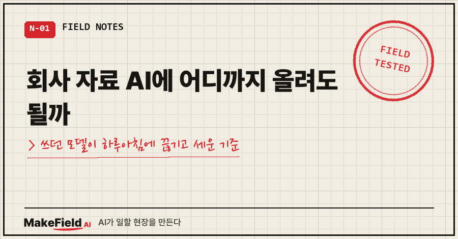
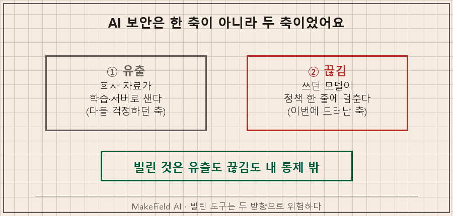
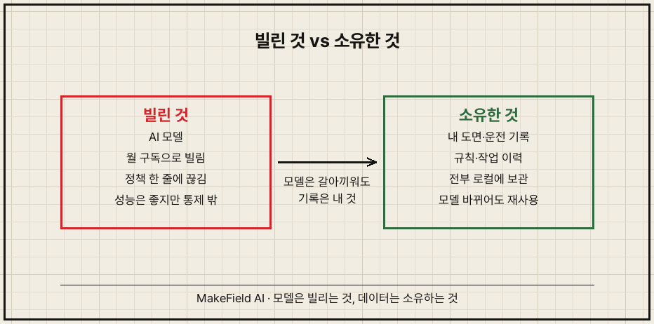
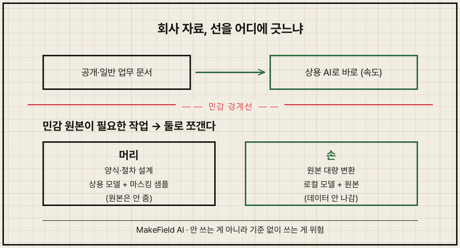

회사 자료를 AI에 어디까지 올려도 되는지, 저도 한참 헷갈렸어요.
결론부터 말씀드릴게요.
회사 자료 AI 보안의 진짜 기준은 '올리느냐 마느냐'가 아니라 '어디에 선을 긋느냐'더라고요.
공개·일반 문서는 상용 AI로 맘껏 쓰고, 민감한 원본만 데이터가 밖으로 안 나가는 로컬 모델로 나누는 것. 이 선 하나면 됩니다.
이 기준을 왜 세웠냐면, 지난달에 좀 황당한 일을 겪었거든요.
저는 수소 설비 제어를 15년째 하고 있어요. 판넬 설계하고, PLC 코드 짜고, 현장 나가서 커미셔닝하는 일이죠.
그러다 보니 도면이며 운전 기록이며 규격 자료며, 15년치가 제 손에 차곡차곡 쌓였어요.
요즘은 그걸 AI에 먹여서 일하고요.
1. 어느 날 아침, 쓰던 AI 모델이 통째로 막혔어요
AI 보안 하면 다들 유출부터 떠올리죠. 회사 자료가 학습에 쓰이는 거 아니냐, 어디로 새는 거 아니냐.
저도 딱 거기까지만 걱정했어요.
근데 지난달에 겪은 건 방향이 정반대였습니다.
데이터가 샌 게 아니라, 쓰던 모델이 하루아침에 끊겼거든요.
수출통제 발표가 하나 나오더니, 제가 매달 돈 내고 쓰던 AI 서비스의 최상위 모델 두 개가 해외 사용자에게 전면 차단됐어요.
출시된 지 며칠 안 된 새 모델을 신나게 쓰고 있었는데, 접속이 그냥 막혀버리더라고요..
사용자 국적을 실시간으로 가려낼 방법이 없다는 이유로 전 세계가 한 번에 잠겼고, 국내 기관이나 대기업 프로젝트도 같이 끊겼다는 기사가 났어요.
솔직하게 짚고 넘어갈게요.
막힌 건 전체 서비스가 아니라 최상위 모델 두 개였어요. 하위 모델로는 계속 일할 수 있었으니 여기서 과장하면 안 되죠.
그래도 충격은 충분했습니다.
약관을 아무리 꼼꼼히 읽고 비학습 보장을 받아도, 정책 한 줄이면 도구가 멈춘다는 걸 눈으로 확인했으니까요.
2. 유출만 걱정했지, '끊김'은 생각도 못 했어요
그동안 AI 보안 얘기는 사실상 한 축이었어요. "내 데이터가 새는가."
근데 이번 일이 두 번째 축을 보여줬어요. "내 도구가 끊기는가."
둘의 공통점이 있어요.
빌린 것에 대해서는 유출도 끊김도 내가 통제할 수 없다는 거예요.
지난 글에서 "모델은 빌리고, 나만의 도구 세팅은 소유한다"는 얘길 했는데, 이번엔 그 '빌린다'는 말이 실제로 어떻게 뒤통수를 치는지 몸으로 겪은 셈이죠.

3. 그날 제 손에 남은 것을 세어봤어요
차단당한 날, 좀 허탈해서 제 손에 뭐가 남았는지 세어봤어요.
[그날 내 컴퓨터에 남아 있던 것]
작업 이력 : 수백 건
지식 문서 : 500개 넘게 (약 23만 줄)
내 판단 기준 규칙 : 규칙 파일 다수
→ 전부 내 로컬에 존재. 모델을 바꿔 끼워도 그대로 재사용됨이게 전부 제 컴퓨터에 있더라고요.
모델이 바뀌어도 이 위에 올리기만 하면 그대로 굴러가요.
실제로 다음 날 하위 모델로 갈아끼우고 평소처럼 일했습니다.
[모델 차단 다음 날]
사용 모델 : 최상위 → 하위 모델로 교체
지식 문서·규칙 : 그대로 로드
업무 : 정상 진행 (성능 차이는 있었지만 중단은 없음)그때 정리된 문장이 이거예요.
모델은 빌리는 것, 데이터는 소유하는 것.
빌린 쪽은 언제든 조건이 바뀔 수 있으니, 진짜 자산은 어떤 모델 위에서도 재사용되는 내 쪽 기록이라는 거죠.

4. 그래서 회사 자료, 어디까지 올려도 되냐면요
여기서 현실 얘기를 해야 해요.
개발자들은 이미 코드를 AI에 다 올리고 있어요. 요즘은 AI 없이 직접 코드 다 치고 있으면 오히려 이상하게 보는 분위기잖아요?
그러니까 진짜 위험은 'AI를 써서 샌다'가 아니라 '기준 없이 다 올려서 핵심까지 샌다'예요.
안 쓰는 건 선택지가 아니고, 기준 없이 쓰는 게 문제인 거죠.
여러분 회사는 그 선이 지금 어디에 그어져 있나요?
제가 잡은 기준선은 이래요.
공개 자료랑 일반 업무 문서는 상용 AI로 마음껏 씁니다. 속도가 완전히 다르니까요.
그런데 민감한 원본이 필요한 작업은 둘로 쪼개요.
양식과 절차를 설계하는 '머리' 역할은 성능 좋은 상용 모델한테 맡기되, 원본 대신 마스킹한 샘플만 줍니다.
원본을 대량으로 변환하는 '손' 역할은 데이터가 밖으로 안 나가는 로컬 모델한테 시키고요.
성능은 빌려 쓰고, 원본은 안 내보내는 구조예요.

5. 로컬 모델, 생각보다 되는데 한계도 있어요
"로컬 모델이 그걸 해주냐" 물으실 텐데요.
분류, 추출, 요약, 문서 정리 수준은 요즘 오픈 모델로 충분히 돌아가요. GPU 없는 사무용 PC에서 도는 소형 모델도 나와 있고요.
다만 솔직히 말하면, 최상위 상용 모델처럼 복잡한 판단을 한 방에 매끄럽게 해내지는 못해요.
고난도 설계나 애매한 판단은 아직 큰 모델이 확실히 낫습니다.
그래서 로컬에 전부 걸자는 게 아니라, 민감 영역 담당이라는 자기 자리를 주자는 거예요.
자주 묻는 질문
Q. 그냥 회사에서 AI를 통째로 막으면 안전한 거 아닌가요?
그게 제일 위험한 선택일 수 있어요. 막아도 직원들은 개인 계정으로 몰래 올리거든요. 그럼 회사는 뭐가 올라가는지조차 모르게 되죠. 차라리 "공개·내부 문서는 맘껏, 민감 원본만 로컬로" 선을 그어주면, 오히려 안심하고 안전하게 도입하게 되더라고요.
Q. 로컬 모델을 당장 구축해야 하나요?
아니요. 시작은 공개·일반 문서를 상용 AI로 빠르게 쓰는 것부터면 충분해요. 로컬은 민감 영역이 실제로 걸릴 때 꺼내는 미래 옵션이에요. 처음부터 무겁게 갈 필요 없어요.
회사 자료 AI, 선 긋기 체크리스트
- ☐ 공개·일반 업무 문서인가 → 상용 AI로 바로 (속도 우선)
- ☐ 민감한 원본이 필요한 작업인가 → 머리는 상용+마스킹 샘플, 손은 로컬+원본
- ☐ 우리 기록(도면·규칙·이력)은 내 쪽에 쌓여 있는가 → 모델 바뀌어도 재사용
정리하면요
모델은 빌리는 거라 유출도 끊김도 내 통제 밖이고, 데이터는 소유하는 거라 모델이 바뀌어도 남아요.
그러니 기록과 기준은 내 쪽에 쌓고, 민감 경계선 안쪽은 로컬로, 바깥쪽은 상용으로 나눠 쓰면 됩니다.
회사 자료 AI 보안은 결국 "쓸까 말까"가 아니라 "선을 어디 그을까"의 문제였어요.
아직 그 선이 없다면, 이번 같은 차단 사태가 선을 그어볼 좋은 계기라고 생각해요.
다음 글에서는 차단당한 그날 하위 모델로 갈아끼우면서 실제로 뭘 옮겼는지, 그 과정을 하나씩 풀어볼게요.
어떤 모델을 쓰든 결국 제 손에 남는 건 제 기록이더라고요. 그 기록들은 makefield.ai 에 옮겨두고 있습니다.
태그: #회사자료AI #AI데이터보안 #AI보안 #로컬AI #로컬모델 #온프레미스AI #AI데이터주권 #기업AI도입 #AI모델차단 #데이터소유 #민감정보AI #AI실무 #현장엔지니어 #제어엔지니어 #MakeFieldAI